Завантаження Windows
| Зображення | Завантаження |
|---|---|
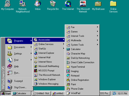 Windows 95 |
WinWorldPC (x86, RTM) WinWorldPC (x86, OSR 1) WinWorldPC (x86, OSR 2) WinWorldPC (x86, OSR 2.1) WinWorldPC (x86, OSR 2.5) Old-DOS (x86) Old-DOS (x86, OSR 2) MalwareWatch (x86, EN) |
| Зображення | Завантаження |
|---|---|
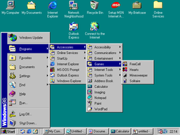 Windows 98 |
WinWorld (x86, FE) WinWorld (x86, SE) Old-DOS (x86) MalwareWatch (x86, FE, EN) MalwareWatch (x86, SE, EN) |
| Зображення | Завантаження |
|---|---|
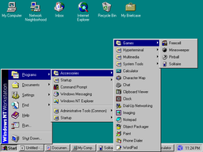 Windows NT 4.0 |
WinWorld (x86) Old-DOS (x86) MalwareWatch (x86, EN) |
| Зображення | Завантаження |
|---|---|
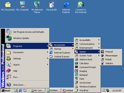 Windows 2000 |
WinWorld (x86) Old-DOS (x86) MalwareWatch (x86, EN, SP3) |
| Зображення | Завантаження |
|---|---|
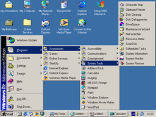 Windows ME |
WinWorld (x86) Old-DOS (x86) MalwareWatch (EN) |
| Зображення | Завантаження |
|---|---|
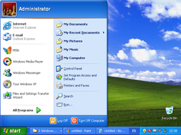 Windows XP |
Old-DOS (x86) Old-DOS (x86_64) MalwareWatch (x86, SP3, EN) |
| Зображення | Завантаження |
|---|---|
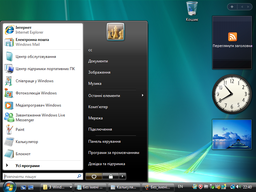 Windows Vista |
Archive.org (x86_64, x86, SP2, UA) MalwareWatch (x86_64, SP2, EN) |
| Зображення | Завантаження |
|---|---|
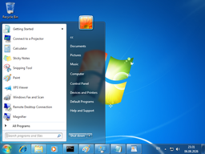 Windows 7 |
Rutracker (x86_64, x86, SP1, EN) MalwareWatch (x64, SP1, EN) |
| Зображення | Завантаження |
|---|---|
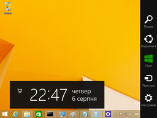 Windows 8.1 |
Rutracker (x86_64, x86, Update 3, UA) Rutracker (Embedded, x86_64, x86, Update 3, UA) MalwareWatch (x86_64, EN) |
| Зображення | Завантаження |
|---|---|
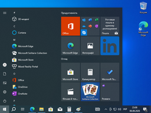 Windows 10 |
Microsoft (x86_64, x86, latest) Rutracker (x86_64, x86, LTSC, 21H2, EN) Rutracker (x86_64, x86, LTSB, 1607, EN, RU) MalwareWatch (x86_64, LTSC, 22H2, EN) |
| Зображення | Завантаження |
|---|---|
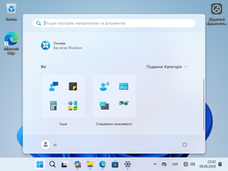 Windows 11 |
Microsoft (x86_64, latest) Rutracker (IoT LTSC, x86_64, 24H2, EN) |